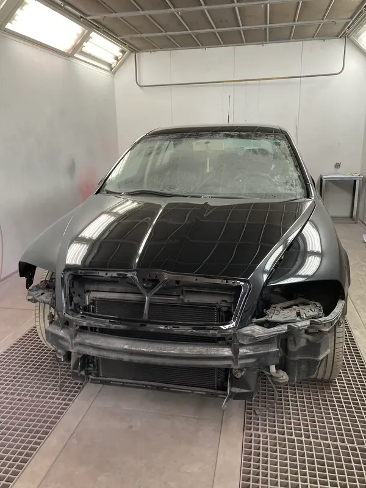

Βαφές Αυτοκινήτων στον Βόλο
Αναλαμβάνουμε ολικές και τοπικές βαφές αυτοκινήτων στον Βόλο, με επώνυμα υλικά, φούρνο βαφής και προσεκτική προετοιμασία της επιφάνειας. Το ζητούμενο σε κάθε βαφή δεν είναι μόνο να φαίνεται σωστό χρώμα την ημέρα της παράδοσης, αλλά να κρατήσει και στον ήλιο και στον καιρό.
Τι περιλαμβάνει η βαφή
- Τοπική βαφή σε ένα τμήμα, όταν η ζημιά είναι περιορισμένη και δεν χρειάζεται να βαφτεί ολόκληρο το πάνελ.
- Βαφή τμήματος όπως φτερό, πόρτα, καπό ή προφυλακτήρας, με ταίριασμα στα γειτονικά τμήματα.
- Ολική βαφή του οχήματος, όταν η βαφή έχει υποστεί φθορά από τον ήλιο ή όταν αλλάζει συνολικά η εμφάνιση.
- Ειδικές αποχρώσεις πέρα από τις κλασικές μεταλλικές: περλέ, ματ και διχρωμίες.
- Βαφή μεμονωμένων εξαρτημάτων - προφυλακτήρες, καθρέφτες, ζάντες και πλαστικά μέρη.
Το ταίριασμα της απόχρωσης
Κάθε χρώμα αυτοκινήτου αλλάζει με τα χρόνια, ανάλογα με την έκθεση στον ήλιο. Γι' αυτό δεν αρκεί ο κωδικός χρώματος του κατασκευαστή: ελέγχουμε την πραγματική απόχρωση του συγκεκριμένου οχήματος και δοκιμάζουμε το χρώμα πριν περαστεί, ώστε η μετάβαση ανάμεσα στο βαμμένο και στο εργοστασιακό τμήμα να μη φαίνεται.
Η βαφή γίνεται σε φούρνο, σε ελεγχόμενη θερμοκρασία, ώστε το φιλμ να σκληρύνει σωστά και να αντέχει περισσότερο στη φθορά, στο πλύσιμο και στις καιρικές συνθήκες.
Πώς γίνεται η βαφή
- Εκτίμηση της περιοχής που χρειάζεται βαφή και φωτογράφιση της αρχικής κατάστασης.
- Αποκατάσταση τυχόν ζημιάς ή ανομοιομορφίας, γιατί η βαφή δεν κρύβει ένα κακό υπόστρωμα.
- Τρίψιμο, καθαρισμός και αστάρωμα της επιφάνειας, με μάσκα στα σημεία που δεν βάφονται.
- Δοκιμή και ταίριασμα της απόχρωσης, πριν από την τελική εφαρμογή.
- Εφαρμογή χρώματος και βερνικιού σε φούρνο, με τα στάδια στεγνώματος που απαιτεί το υλικό.
- Στιλβωση και τελικός έλεγχος κάτω από φως, για να φανούν τυχόν διαφορές στην απόχρωση ή στην υφή.

Βαφή ή επισκευή;
Αν κάτω από το χρώμα υπάρχει βαθούλωμα ή παραμόρφωση, η βαφή από μόνη της δεν αρκεί: χρειάζεται πρώτα επισκευή του αμαξώματος. Επειδή φανοποιείο και βαφείο λειτουργούν στον ίδιο χώρο, η εργασία ολοκληρώνεται χωρίς να μετακινηθεί το όχημα σε άλλο συνεργείο.
Αν η ζημιά προέκυψε από ατύχημα και καλύπτεται από ασφάλιση, αναλαμβάνουμε και τη διεκπεραίωση της ασφαλιστικής υπόθεσης.
Συχνές ερωτήσεις
Μπορεί να βαφτεί μόνο ένα τμήμα, χωρίς να φαίνεται η διαφορά;
Στις περισσότερες περιπτώσεις ναι. Κάνουμε τοπική βαφή με ταίριασμα της υπάρχουσας απόχρωσης και «σπάσιμο» της μετάβασης στα γειτονικά τμήματα. Σε πολύ παλιά ή έντονα ξεθωριασμένα χρώματα, μπορεί να προτείνουμε βαφή μεγαλύτερου τμήματος ώστε το αποτέλεσμα να είναι ομοιόμορφο.
Πόσο διαρκεί η βαφή;
Εξαρτάται από το υλικό, την έκταση και τη φροντίδα του οχήματος. Η βαφή σε φούρνο με σωστή προετοιμασία αντέχει σαφώς περισσότερο από μια βαφή χωρίς φούρνο, και η συντήρηση με τακτικό πλύσιμο και κέρωμα βοηθά να κρατήσει περισσότερο.
Βάφετε ματ και περλέ χρώματα;
Ναι. Τα ματ και τα περλέ θέλουν διαφορετική διαδικασία από τα συνηθισμένα μεταλλικά χρώματα, γι' αυτό η εκτίμηση γίνεται πάντα με το όχημα μπροστά μας.
Βάφετε και μοτοσυκλέτες ή επαγγελματικά οχήματα;
Ναι. Βάφουμε μοτοσυκλέτες, βαν, ημιφορτηγά και φορτηγά, καθώς και μεμονωμένα εξαρτήματα όπως ντεπόζιτα και fairing.
Γίνεται εκτίμηση πριν ξεκινήσει η εργασία;
Πάντα. Βλέπουμε το όχημα, συζητάμε τι χρειάζεται και σας ενημερώνουμε πριν περαστεί οποιοδήποτε υλικό.